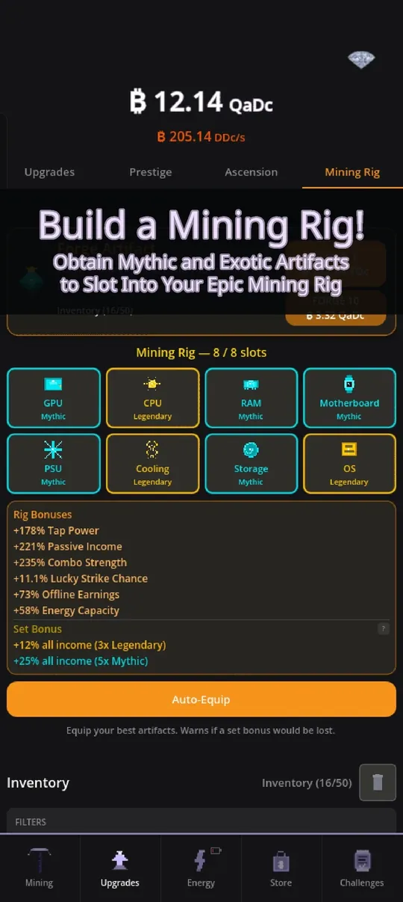

Once you have a few prestiges behind you, the question changes from "what do I do" to how to progress faster in Crypto Mining Tycoon. The answer is rarely "tap more". The biggest speed-ups hide in the systems around the core loop: Energy, the Mining Rig, the Lab and your managers. This guide ranks them in the order I would use them. The game is on Google Play, and if you are still learning the basics, read the beginner tips first.
1. Put your power plant to work
Energy regenerates by itself and is spent on modes and bursts. The plant you pick sets how fast energy regenerates and how large your capacity is. The first plants are the Hamster Wheel (free), the Solar Panel (unlocks at 100 upgrades owned) and the Wind Turbine (200 upgrades), then plants that unlock with prestige and later ones with Ascension, such as the Fusion Reactor in the screenshot.

Energy modes give boosts for as long as they are active, for example more passive income, more tap power, cheaper upgrades, better lucky strikes, bigger offline earnings and a prestige bonus. Each mode drains a share of your regeneration, so the trick is balance: activate as many modes as your slots allow while your energy stays positive. Higher plants give more mode slots, up to 4. Energy bursts are short active abilities with cooldowns, such as Power Surge and Grid Overload, and I use them right before a big upgrade or prestige push.
2. Build and tune your Mining Rig
The Mining Rig tab has 8 slots: GPU, CPU, RAM, Motherboard, PSU, Cooling, Storage and OS. You fill them with artifacts, each with its own rarity and stat rolls, and the rig adds up tap power, passive income, combo strength, lucky strike chance, offline earnings and energy capacity.

Two things matter most. First, set bonuses: in the screenshot, three Legendary pieces give +12% income and five Mythic pieces give +25%. Second, artifacts are organised in six families with their own set bonuses. The Auto-Equip button picks your best pieces and warns you if a set bonus would be lost. You can merge two artifacts of the same rarity and slot into a better one, reforge a stat with Scrap, and lock a favourite so you do not discard it by accident.
3. Spend Research Points in the Lab
The Lab unlocks after your first prestige. Research Points come from prestiging (4 per prestige) and from Ascension (30 per Ascension), plus a small daily trickle. The tree has 28 upgrades in four branches: Tap, Yield, Night (offline earnings) and Flux (energy). Some branches fork, so you choose between two paths, and you can redraw a fork for coins if you regret it.
My tip: pick the branch that matches how you play. If you tap a lot, go Tap. If you open the game twice a day, Yield and Night are better. Flux helps once your energy system matters.
4. Hire managers
You can hire up to six managers. Three foremen boost passive income for different tiers of upgrades, a coach boosts tap power, an engineer boosts energy regeneration, and a steward boosts offline earnings. They level up with coins, and they keep working through prestige and ascension, so they are a permanent investment.
5. Use upgrades, not just coins
A speed-up that is easy to miss is the choice of what to buy. The prestige milestones give discounts on upgrades, and Ascension shard upgrades give more, including extra starting coins after a reset. Lifetime store packs such as Head Start and Automation Suite exist, but they are optional shortcuts, not requirements. I cover that honestly in is it worth playing.
A simple order of operations
- Spend coins on upgrades, then tap in bursts for combo.
- Switch on the energy modes your slots allow.
- Slot your best artifacts and use Auto-Equip after each drop.
- Spend Research Points and Staff coins before you prestige.
- Prestige when the multiplier jump is big, and repeat.
Common mistakes that slow you down
- Leaving energy full. Energy that is not spent is wasted potential. Use modes continuously and bursts at the right moment.
- Forgetting to re-equip artifacts. After each drop, press Auto-Equip and check whether a set bonus changed.
- Prestiging with unspent Research Points. Spend them first, because they make the next run faster.
- Buying everything at once. Pick one branch of the Lab and one manager to level first, then widen.
If a section still feels unclear, the in-game "?" buttons explain drop rates, set bonuses and multiplier breakdowns, and the genre overview shows how these layers fit together.
How I check if a change helped
The easiest test is the income per second at the top of the screen. Write down the number, make one change, and compare. If you switch on an energy mode, equip a new artifact or buy a Lab node, you should see the number move right away, and the Stats tab and the multiplier breakdown popups show where each bonus comes from. Doing one change at a time shows you which systems give the most for your play style, and that is worth more than any fixed guide, including this one.
Try it
Pick one of these systems you have been ignoring and spend ten minutes with it. Open Crypto Mining Tycoon on Google Play and see how much faster your next prestige comes.
Frequently Asked Questions
What should I upgrade first?
Keep buying upgrades with all your coins, then use your energy modes and slot your best artifacts. After your first prestige, spend Research Points in the Lab and hire managers before you prestige again.
How do I get Research Points?
You earn 4 Research Points per prestige and 30 per Ascension, plus a small daily trickle. The Lab unlocks after your first prestige and has 28 upgrades across four branches.
Do managers keep working after a prestige?
Yes. You can hire up to six managers, including foremen, a tap coach, an engineer and a steward. They level up with coins and keep working through prestige and ascension.